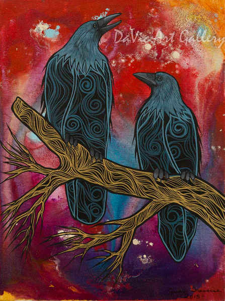

Storytelling as Pedagogy
Storytelling is more than a method of sharing information; it is a way of teaching that encourages learners to engage with knowledge through experience, reflection, and interpretation. Unlike approaches that focus only on delivering facts or instructions, storytelling invites learners to consider meaning, relationships, and multiple perspectives.
In many Indigenous knowledge systems, storytelling has long served as an important educational practice. Stories communicate teachings about identity, relationships, community responsibilities, and ways of living respectfully with others and with the land. Through storytelling, knowledge can be shared across generations and understood through context and reflection (Archibald, 2008; see References).
Jo-Ann Archibald (2008) explains that stories are powerful teachers because they engage the whole person: “Stories have the power to make our hearts, minds, bodies, and spirits work together.”
This holistic view of learning emphasizes that knowledge is not only intellectual. Stories can also involve emotional understanding, ethical reflection, and relationships with people and place.

Learning Through Relationships
A key feature of storytelling pedagogy is its emphasis on relationships. Stories often connect learners to family members, Elders, communities, and the natural environment. Through these connections, knowledge is understood as relational rather than isolated information.
Research on Indigenous methodologies emphasizes that knowledge develops through relationships between people, culture, and place (Gerlach, 2018; see References). Storytelling naturally supports this relational understanding of learning because stories link listeners to shared experiences and cultural teachings.
In educational contexts, relational approaches to teaching are also associated with supportive learning environments. When classrooms emphasize respect, dialogue, and caring relationships, students are more likely to feel engaged and motivated in their learning (Velasqueza et al., 2013; see References).
Reflection as a Learning Process
Another important aspect of storytelling pedagogy is reflection. Stories rarely present a single direct lesson. Instead, they invite listeners to think carefully about what the story might mean and how it relates to their own experiences.
This process of interpretation encourages deeper learning. When learners reflect on stories, they consider different perspectives, ask questions, and build connections between ideas. Research on learning suggests that meaningful learning occurs when students actively construct understanding rather than simply receiving information (National Research Council, 2000; see References).
Storytelling in Educational Practice
Educators can integrate storytelling into learning environments in thoughtful ways. Stories may introduce new topics, support discussions about identity and culture, or encourage learners to reflect on values and relationships. Storytelling can also provide opportunities for learners to share their own experiences and perspectives.
In early childhood education, storytelling can support language development, imagination, communication skills, and creative thinking. Through listening to and sharing stories, children practice interpretation, empathy, and expression (Wang et al., 2010; see References).
Respectful engagement: When educators draw on Indigenous storytelling traditions, it is important to do so with care and respect. Stories may carry cultural teachings and may belong to particular communities. Educators should acknowledge sources and avoid presenting Indigenous stories as generic classroom materials.
Why Storytelling Matters for Teaching and Learning
Storytelling offers a pedagogical approach that emphasizes relationships, reflection, and meaningful engagement with knowledge. By learning from Indigenous storytelling traditions, educators can recognize that teaching involves more than delivering information—it involves building understanding through listening, connection, and shared experience.
Through storytelling, learning becomes a collaborative process in which knowledge is explored, interpreted, and understood together.